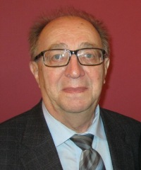

Геннадий Чернов, композиторГеннадий
Владимирович Чернов - заслуженный деятель искусств Российской
Федерации, профессор кафедры композиции и инструментовки Российской
Академии музыки имени Гнесиных.
Геннадий Чернов: «Музыка – моя мечта»
Геннадий Чернов: «Музыка – наш праздник»
Послушать музыку Геннадия Чернова
Биография Геннадий Владимирович Чернов родился 26 апреля 1937 года в Ташкенте. Его мать, Надежда Сергеевна Меншутина, врач-терапевт, окончила 2-й Московский медицинский институт. Отец, Чернов Владимир Иванович, — инженер-электрик, специалист по городскому электротранспорту, выпускник Московского энергетического института. По окончании учебных заведений молодые специалисты, образовавшие семью, получили распределение в Ташкент, где и родился их сын Геннадий.
В 1938 году семья вернулась в Москву, но ненадолго.
Началась война. Мать с сыном были эвакуированы в Ташкент и находились там с 1941 по март 1943 гг. После возвращения в Москву Геннадий поступает в общеобразовательную Московскую школу № 146 (1944) и оканчивает ее в 1954 году.
Занятия музыкой начинаются с 1952 года, в самодеятельном духовом оркестре Дома культуры имени В.П. Чкалова. Руководитель оркестра Е.Т. Федулкин стал обучать новичка игре на кларнете. Уже через год, в марте 1953 года, Г. Чернов поступает в детскую музыкальную школу (ныне это школа № 7 имени P.M. Глиэра), где занимается на фаготе в классе А.А. Розенберга. Именно здесь — в духовом оркестре и музыкальной школе — юный музыкант приобретает первоначальные навыки оркестровой игры, позволившие ему позже исполнять партии «взрослых» оркестровых сочинений в самодеятельных симфонических оркестрах Московского Дома учителя и Дома ученых. "Моя мама была врачом, папа - инженер по электротранспорту. В 7 классе я был в пионерском лагере, и к нам приехал огроменный духовой оркестр. Я был просто потрясен. Меня это так задело, что потом, когда я уже вернулся в Москву, я увидел в нашей школе объявление о приеме в самодеятельный духовой оркестр в доме культуры Чкалова (Дом культуры имени В.П.Чкалова). Он находился недалеко от Белорусского вокзала на улице Правды, а мы жили неподалеку. Я сагитировал своего друга, и мы туда пошли. Нас приняли, друг потом учился на саксофоне, а я на кларнете. Так состоялось моё самое первое знакомство с музыкой. Но потом я постепенно все больше и больше увлекался ею. Я помню, огромное впечатление на меня произвела ария Мельника из оперы «Русалка», я просто бредил этой музыкой. Стал в театр ходить, на концерты, да и по радио тогда передавали много хороших произведений". "Потом, уже когда я был в 9 классе, вдруг мне ужасно понравился фагот. Хотя первая любовь была кларнет. Один знакомый музыкант сказал мне: «Тебе фагот понравился? Хочешь, я тебя устрою в музыкальную школу?» Его приятель преподавал там, это был Антон Антонович Розенберг. Потом через много лет мы с ним вместе работали в институте (имени Гнесиных). Это был мой первый учитель. За окном был март месяц 9 класса, и меня приняли в музыкальную школу. Я с таким рвением занимался, что первый класс прошел за три месяца, потом второй за три месяца, потом сразу четвертый и седьмой. За год и три месяца я окончил школу и на выпускном экзамене играл уже концерт Моцарта для фагота".
Параллельно с занятиями музыкой Г. Чернов учится в техническом вузе. С 1954 по 1961 гг. он — студент, а затем аспирант Московского института Тонкой химической технологии имени М.В. Ломоносова. Одновременно он посещает занятия в кружке при Доме композиторов, которые ведут преподаватели Е.И. Яхнина, М.А. Осокин и O.K. Эйгес. К этому времени относятся первые его опыты сочинения музыки. "Был 10 класс, тогда была десятилетка. Встал вопрос, что дальше делать? И, естественно, я хотел продолжать заниматься музыкой, но фагот - довольно дорогой инструмент и денег не было, чтобы его купить. Я же в школе занимался на казенном инструменте. Поэтому я поступил в химический институт, но все равно продолжал заниматься музыкой и опять стал ходить в духовой оркестр. Обратно вернулся на кларнет, потому что фагота у меня не было". "Конечно, это не очень хорошо. После фагота, там тросточка маленькая, у кларнета мне показалась такая «дубина». Ну, постепенно привык. У меня был товарищ Алик Кузнецов, он учился в ЦМШ на скрипке, а я его утащил в оркестр на валторне играть. Он потом бросил скрипку, кончил Мерзляковское училище и поступил в Консерваторию, был блестящий валторнист. Позже его взяли в оркестр Баршайя. Но в тот период, когда он учился, он меня затащил в самодеятельный симфонический оркестр Дома учителя (Московский Дом учителя). Вот мы с ним туда ходили, он - на валторне, я - на кларнете, играли массу хорошей музыки". "... в год мы играли три-четыре программы и причем какие: 1-ый Концерт Чайковского, 5-ю Симфония Бетховена, Итальянское каприччо, 5-й концерт Бетховена, «Эгмонт», советских композиторов, Шостаковича, Кабалевского. Я играл партию второго кларнета. Для меня это было огромное удовольствие - посидеть в оркестре - и плюс большая будущая школа. Я потом, когда уже стал профессионально заниматься музыкой, понял, как это много мне дало. Потому что я слышу оркестр внутренне. Это очень важно. И студентам своим я говорю, что обязательно надо играть в оркестре. Даже во времена петербургской
Консерватории, когда Чайковский учился, всех студентов заставляли играть в оркестре. Петр Ильич играл на флейте, Рубинштейн всех заставлял. Это и польза
огромная и поддержка оркестра".
В аспирантуре института Тонкой химической технологии Г.Чернов начинает работу над диссертацией, но огромная любовь к музыке берет свое. Понимая необходимость серьезной музыкально-теоретической базы для занятий композицией, в 1961 году Г. Чернов поступает в музыкальное училище имени Гнесиных, на теоретическое отделение, и экстерном, за два года, оканчивает обучение. Музыкальное дарование и целеустремленность позволяют Г. Чернову поступить в институт имени Гнесиных, в класс композиции O.K. Эйгеса. "...я окончил химический институт (Московский институт Тонкой химической технологии имени М.В. Ломоносова), и потом меня приняли в аспирантуру. Я
хорошо учился. И тут как раз начал сочинять, но это все были еще первые, неосознанные произведения, небольшие пьесы для фортепьяно. Кстати, когда я
поступил в химический, родители купили мне пианино. И я впервые начал сочинять и играть какие-то пьесы. Что-то получалось, что-то нет. А потом, когда я уже был в аспирантуре, получилось так, что меня направили в Научно-исследовательский институт пластмассы делать работу. В лаборатории, где я оказался, было тесное помещение и все заставлено аппаратами, приборами, места свободного не было. А в окне виднелось новое строящееся здание, там вскоре мне и должны были выделить место. А пока оно строилось, у меня получилось довольно много свободного времени. Почти год я сидел в библиотеке, собирал литературу и занимался музыкой. И тут вновь дело случая. Еще один мой друг рассказал, что есть такой кружок самодеятельных композиторов при Доме композиторов. Мы туда пришли, показали какие-то свои фрагменты произведений, и нас приняли. И каждое воскресение мы ходили на занятия. Это был еще старый Дом композиторов около музея Глинки. Я полтора года ходил туда, для меня это было как праздник. Мы там гармонию изучали, сольфеджио, муз. литературу, занятия были почти как в училище. И плюс под руководством учителей мы писали произведения. Там я и познакомился со своим будущим педагогом Эйгесом. Однажды Яхнина, которая вела у нас гармонию, говорит мне: « А вы знаете, мне кажется, вам надо профессионально заняться музыкой». Ну, и эта мысль мне засела в голове. Тем более я к этому так рвался, так стремился. Я решил, что надо поступать в музыкальное училище. Все лето сидел, готовился, изучал Способина, узнал, какие требования нужны на теоретическое отделение". "Я понял, что мне нужно получить хорошую теоретическую базу. Я бросаю аспирантуру и поступаю в училище, изначально на заочное отделение, потом перевелся на вечернее. Группа была маленькая, из трех человек. Мне повезло, я попал к замечательной женщине, она была уже пожилая, ученица Глиэра, Валентина Алексеевна Таранущенко. Она из нас все соки выжимала. Такая была потрясающая «старушенция» и все ее знали. Занимались мы у нее дома в Трубниковском переулке, ходили два раза в неделю. Она преподавала сольфеджио, гармонию и потом еще и анализ. И так мы прозанимались два года и поняли, что можем уже поступать. Не кончая училища, мы поступили вот сюда, в Гнесинский институт. Сдали экзамены мы хорошо, но меня не приняли, потому что я не работал по специальности. И уже в сентябре я пришел к Таранущенко, а у нее сидит такой взрослый дядя, оказался он директором Новомосковского музыкального училища. Она говорит ему: «Лёня, понимаешь, вот Чернова не приняли, потому что он не работает по специальности. Ты можешь ему помочь?» «Могу – сказал Лёня,- а он поедет ко мне работать?» Я говорю: «Конечно, поеду!» И он тут же достает бланк, у него с собой был, пишет, что Геннадий Владимирович Чернов принят на работу в Новомосковское музыкальное училище, и ставит печать. Я беру эту справку и иду на заочное отделение, куда я поступал, отдаю ее проректору, и меня зачисляют". "Конкурс был довольно большой, человек шесть на место. Приняли Давида Кривицкого, кого-то еще и вот меня. Ну, вот я пять лет учился и как раз попал в Эйгесу, моему замечательному педагогу, которому я показывал свои произведения еще в Доме композитора. Я хорошо учился, и меня оставили работать. И вот уже 44 года я здесь пропадаю и пишу музыку" (в Гнесинской Академии). "Колоссальную роль играет то, что здесь много исполнителей и всегда можно реализовать задуманное. Я пишу много оркестровой музыки, особенно для народного оркестра, и всегда это исполняется".
В 1963 году Г. Чернов уже студент Музыкально-педагогического института имени Гнесиных по классу композиции. Учебные дисциплины у него ведут O.K. Эйгес (композиция и инструментовка),ПИ. Литинский (полифония), В.А. Таранущенко (гармония), Ф.Г. Ар-заманов, Р.Н. Берберов (анализ музыкальных произведений).
Имена видных педагогов, у которых занимался Г. Чернов, свидетельствуют о том, что он является одним из прямых наследников Московской композиторской школы, ведущей свою «родословную» от П.И. Чайковского (Танеев — Глиэр — Жиляев — Эйгес).
Параллельно с учебой в институте имени Гнесиных Г. Чернов работает преподавателем в музыкальных училищах, сначала в Новомосковском (Тульской области), затем — в Царицынском (Московской области). По окончании ассистентуры (1968) он получает приглашение работать на кафедре композиции и полифонии института имени Гнесиных. "Два года я работал в Новомосковском училище, а потом его директор переехал в Коломенское училище, и мы все за ним. После семь лет я работал в Царицынском училище, там, где сейчас дворцы. И был у меня один студент Виктор Петров, духовик, он оказался сыном знаменитого Ивана Васильевича Петрова, генерала армии. Так вот однажды он говорит: «Вот мой отец, сейчас он ушел в отставку, собирается создавать Государственный духовой оркестр. Может быть, вы что-нибудь для него напишете?» Он меня с ним познакомил, я показал ему какие-то фрагменты из будущей «Русской сюиты». И он говорит: «Вот это то, что нам надо. Давайте делайте партитуру. Мы будем играть». И я летом написал партитуру, и ее сыграли. Хотя я задумал в ней 5 частей, но оказалось, что для духового оркестра не стоит слишком размахиваться. Сам Петров сказал: «Давайте мы сократим». Я сначала ломался, было жалко материала, но пришлось обрезать вступление, оно стало как будто из другой оперы. На самом деле, оно должно было перекликаться с богатырской пятой частью. Но
потом эти элементы вошли в симфонию. Так вот, этот оркестр (Государственный духовой оркестр России), созданный в 1969 году, в 70-м году в ноябре, дает первый концерт в Большом зале консерватории. В свою концертную программу они включили мою «Русскую сюиту». Успех был потрясающий. На бис повторяли вторую часть. Шуму было много. Второе отделение начиналось с моей музыки. В зале были Шостакович, Хренников, был полный зал, народу битком. Потом этот оркестр играл «Русскую сюиту» в зале Чайковского, в Колонном зале, почти во всех залах Москвы, вплоть до Театра Эстрады, Зала России, который сейчас снесли. Далее оркестр поехал на гастроли, и они в общей сложности сыграли ее около 300 раз. Записали на пластинки, по телевизору была про нее передача «Золотые трубы», все это записывалось и передавалось несколько раз. Ее играли в Германии, Болгарии, Венгрии, везде, где были наши военные духовые оркестры. А потом дирижер попросил написать для них симфонию. Через два года была написана Первая симфония. Так все закрутилось и пошло. Потом я стал писать для народного оркестра и параллельно - для симфонического".
С 1968 года и по настоящее время ГВ. Чернов — бессменный преподаватель в Российской Академии музыки имени Гнесиных, где сначала он вел классы специального анализа, полифонии, чтения партитур и инструментовки, а затем стал — и остается — одним из ведущих педагогов класса композиции и инструментовки. Среди его многочисленных учеников — композиторы, музыковеды, редакторы, педагоги музыкально-теоретических дисциплин, исполнители, лекторы филармоний (всего свыше 300 человек). В разные годы его класс окончили композиторы Е. Алексеева, Е. Анисимова, X. Ахмедли (Азербайджан), Н. Барковская, И. Вишневский, В. Доленко, А. Иванов, Д. Лабунский, С. Левин, А. Лушин (Великобритания), Д. Лыбин (Белоруссия), Г. Май, Е.
Макарцева, М. Мартинес (Испания), И. Некрасова, А. Поздняков (Канада), С. Пышненко (Германия), М. Раленко, С. Решетов, Р. Сайгин, В. Сариев, Е. Спилиоти (Украина), А. Староверова, И. Тамарин (Израиль), О. Теляковская, И. Тихомиров, В. Ульянич, 3. Файн, А. Шахадынец и др.
В 1977-1980 гг. Г. Чернов был командирован Министерством культуры СССР в Ирак и вел класс композиции в «Школе музыки и балета» города Багдада. "Я три года работал в Багдаде, командировка от Министерства культуры. Это был 1977-1980 год. Только на лето мы приезжали домой. Это была «Школа музыки и балета». и я там вел класс композиции. Сначала было конечно трудно, языковый барьер давал о себе знать. Они немного знали английский, и я тоже чуть-чуть. Очень помогали дети от смешанных браков, где один из родителей был русский, они знали обычно два языка, так и справлялись. (Сейчас там война и наверняка уже от этой школы ничего не осталось). Потому что она была рядом с аэродромом, и иногда с диким рёвом взлетали реактивные самолеты, так что ничего не было слышно. А там жара и окна все время были открыты, потому что в тени было 47 градусов. Мы дурели от этого солнца. В течение зимы могло быть всего три-четыре дождя. А так все время солнце, солнце, солнце". Творчество композитора Г.В. Чернова широко известно в России и во многих странах мира. Его произведения неоднократно исполнялись на международных фестивалях «Московская осень» и «Ленинградская весна», на I Международном фестивале духовой музыки во Франции (Гавр, 1990), в Белоруссии, Болгарии, Венгрии, Германии, Ираке, Казахстане, Польше, Португалии, США, Узбекистане, Украине, Финляндии, Чехии, Югославии. "Лет 12 тому назад (примерно 2000 год), приезжал американский дирижер и издатель. Встреча с ним была в Доме композиторов. Он отбирал три произведения для духового оркестра, чтобы издать их в Америке. У меня взяли два - «Восточный танец» и Первую симфонию. И вдруг, год назад (2011 год) по
интернету мне приходит письмо от испанского дирижера и композитора Тео Апарисио Барберана. О том, что он в Америке приобрел мою партитуру Первой симфонии и хотел бы ее сыграть. Я согласился. Мы с ним переписывались по интернету, уточняли всякие детали, разные технические моменты, и вот он уже два раза сыграл эту симфонию. Один раз в мае и другой - в июне (2012 год) на Международном фестивале «Symphony band» с огромным успехом. Он потом прислал мне видео. В зале стоял рёв аплодисментов, минут пять зрители никак не могли успокоиться. Состав его духового оркестра - 140 человек. Испанцы очень любят такие огромные оркестры. Вот так мы с ним подружились. И когда назрел этот юбилейный концерт (2012 год), я предложил ему принять участие в нем. И он согласился.
2012 год."В этом году в апреле мне исполнилось 75 лет, вот и решили устроить такой авторский вечер (он состоялся 27 ноября в Концертном зале РАМ имени
Гнесиных). Это была даже не моя инициатива, а идея кафедры оркестрового дирижирования, Валерия Халилова и Бориса Ворона. Валерий Михайлович предложил два оркестра: симфонический и духовой (оба оркестра Министерства обороны РФ). Я, естественно, был счастлив этому обстоятельству. Я знаю их, они могут играть и симфоническую музыку, и духовую, и джазовую и что угодно, в общем - универсальные ребята".
Произведениям Г. В. Чернова свойственны современность и высокое мастерство, опора на русские классические и народные традиции, стройность форм и динамизм драматургического развития, эпический размах, виртуозное владение оркестровыми средствами, стремление к колористическим поискам (особенно в произведениях для духового оркестра и оркестра русских народных инструментов).
В творчестве Г.В. Чернова можно выделить четыре основных направления:
Произведения для большого симфонического оркестра:
Третья симфония для струнного оркестра, Пятая симфония «К Отчизне», Симфония-каприччио на арабские темы, Восточная поэма и танец, Романтическая поэма-вальс, Концерт для виолончели с оркестром, Симфония-концерт для скрипки и симфонического оркестра, Восточная фантазия «Памяти Н.А. Римского-Корсакова» для кларнета и симфонического оркестра, Эпическая оратория «Сорок первый — сорок пятый» для меццо-сопрано, смешанного хора и симфонического оркестра на стихи В. Татаринова, Торжественная кантата-ода «Новому тысячелетию» для хора и симфонического оркестра на стихи И. Черняевой.
Произведения для духового оркестра:
Первая симфония «Русь Великая», «Русская сюита», Восточная поэма и танец (авторский вариант для духового оркестра), Скерцо для фагота с оркестром, Восточная фантазия «Памяти Н.А. Римского-Корсакова» для кларнета и духового оркестра, пьеса «Частушка», Сюита № 2 «Классическая».
Произведения для оркестра русских народных инструментов:
Вторая симфония, Четвертая симфония «Лирическая», «Русская сюита», Концерт для оркестра баянистов и ударных, Полифоническая симфониетта для оркестра баянистов и ударных, Скерцо-токката для оркестра баянистов и ударных.
Камерно-инструментальная, вокальная и хоровая музыка: Соната для фортепиано, Соната для кларнета и фортепиано, Струнный квартет, Две концертные пьесы для струнного трио, «Поэтические картинки» для фортепиано, Концертные пьесы для фортепиано, Поэма на тему Поля Двойрина, Скерцо для фагота и фортепиано, Ария для трубы (вариант для валторны) и фортепиано, Пьесы для баяна, романсы на стихи П. Шелли, М. Бенюка, Е. Евтушенко, Д. Татаринова, хоры a cappella и др.
Сочинения Г.В. Чернова изданы в России и США, они записаны на грампластинки и компакт-диски. На них имеются многочисленные отклики в печати. Самые лестные отзывы о творчестве и музыкально-общественной деятельности Г.Чернова дали такие композиторы и музыковеды, как Т. Хренников, Д. Шостакович, А. Хачатурян, С. Туликов, И. Мартынов, Г. Поляновский, Е. Долинская, Р. Косачева, М. Имханицкий, Б. Рунов, С. Дунаев, А. Генделев, Г. Кузнецов, О. Шикова, С. Петряева, Л. Римский и другие.
Значительны достижения профессора Г.В. Чернова в научно-методической области. Его произведения для народного оркестра и оркестра баянистов постоянно используются в образовательном процессе многих консерваторий и музыкальных училищ. Широкой известностью пользуются у педагогов и студентов пьесы-задачи по инструментовке для симфонического и народного оркестров.
В 2007 году вышла книга о Геннадии Владимировиче Чернове: КОМПОЗИТОР ГЕННАДИЙ ЧЕРНОВ. Музыка - наш праздник
В книге помещены материалы, характеризующие жизненный и творческий путь известного отечественного композитора Геннадия Владимировича Чернова к 70-летию со дня рождения и 45-летию его творческой деятельности. Публикация предназначена всем, кто интересуется вопросами современного российского композиторского творчества, музыкой для духовых оркестров и оркестров русских народных инструментов. В ней помещены свидетельства коллег, воспоминания учеников, избранные музыковедческие статьи и фрагменты научных трудов, отклики прессы, как опубликованные, так и хранящиеся в личном архиве Г.В. Чернова в рукописном виде и любезно предоставленные им для данного издани я.В конце книги публикуются справочные материалы, позволяющие полнее представить жизненный и творческий путь этого известного русского композитора и видного деятеля музыкальной культуры.
Источники статьи http://ikompozitor.ru/book/850
http://beautiful-music.ru/node/138
|